기계정비산업기사 (2016-03-06 기출문제)
1과목: 공유압 및 자동화시스템
1. 오일탱크에 설치되어 있는 방해판의 일반적 기능이 아닌 것은?
- 오일의 냉각을 양호하게 한다.
- 오일에 포함된 오염입자의 침전을 돕는다.
- 오일탱크로 이물질이 흡입되는 것을 방지한다.
- 오일 중에 함유된 기포를 방출하는데 도움이 된다.
(정답률: 56%)

2. 유압 실린더 쿠션장치의 요소에 관한 설명으로 틀린 것은?
- 체크밸브 - 복귀시동 속도를 촉진한다.
- 쿠션 링 - 로드엔드축에 흐르는 오일을 차단한다.
- 쿠션 플런저 - 헤드엔드축에 흐르는 오일을 차단한다.
- 쿠션 밸브 - 완충장치로 서지압(surge pressure)은 발생하지 않는다.
(정답률: 59%)
3. 12kW의 전동기로 구동되는 유압펌프가 토출압이 70kgf/cm2 토출량은 80L/min, 회전수가 1200rpm일 때, 전 효율은 약 몇 % 인가?
- 59
- 68
- 76
- 87
(정답률: 57%)
4. 다음 중 유압실린더의 사용 목적으로 가장 적절한 것은?
- 유체의 양을 조절하기 위하여
- 유체의 흐름 방향을 제어하기 위하여
- 유체 압력에너지의 압력을 조절하기 위하여
- 유체 압력에너지를 직선운동으로 변환하기 위하여
(정답률: 81%)
5. 유압모터 제어회로의 종류에 해당되지 않는 것은?
- 정출력 회로
- 정토크 회로
- 급속배기 회로
- 브레이크 회로
(정답률: 65%)
6. 한쪽 방향의 흐름에 대해서는 설정된 배압이 생기게 하고, 다른 방향으로는 자유로운 흐름이 가능한 유압밸브로 체크 밸브가 내장되어 있는 것은?
- 감압 밸브
- 무부하 밸브
- 시퀀스 밸브
- 카운터밸런스 밸브
(정답률: 82%)
7. 아래 그림과 같이 2개의 회전차를 서로 90° 위상으로 설치하고, 회전자 간의 미소한 틈을 유지하고 역방향으로 회전시키는 방식의 공기 압축기는?
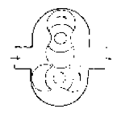
- 루트 블로워
- 베인형 공기 압축기
- 축류식 공기 압축기
- 회전식 공기 압축기
(정답률: 72%)
8. 직관적인 회로 구성 방법 중 실린더의 운동을 나타내는 방법이 아닌 것은?
- 수식적 표현법
- 서술적 표현법
- 테이블 표현법
- 약식기호 표현법
(정답률: 54%)
9. 윤활기(Lubricator)의 사용목적으로 적합하지 않은 것은?
- 내구성 향상
- 마찰력 감소
- 기기효율 상승
- 실(seal)의 고착
(정답률: 84%)
10. 압축공기의 질을 높이는 방법으로 틀린 것은?
- 제습기를 사용한다.
- 응축수를 제거한다.
- 공기압 필터를 사용한다.
- 압축공기의 흐름을 빠르게 한다.
(정답률: 73%)
11. 생산 공정이나 기계 장치 등에 자동 제어계를 도입하여 자동화를 추진했을 때의 장점이 아닌 것은?
- 생산원가를 줄일 수 있다.
- 생산량을 증대시킬 수 있다.
- 인건비를 감축시킬 수 있다.
- 시설투자비를 감소시킬 수 있다.
(정답률: 77%)
12. 검출물체가 검출면으로 접근하여 출력이 동작한 지점에서 검출물체가 검출면에서 멀어져 출력이 복귀한 지점 사이의 거리는?
- 검출거리
- 설정거리
- 응차거리
- 공청 동작거리
(정답률: 65%)
13. 전기를 이용하여 기계에서 정지스위치를 ON 하여도 기계가 정지하지 않는 고장의 원인으로 가장 적합한 것은?
- 과전압, 내부 누설의 감소
- 구동 동력 부족, 과부하 작동, 고압운전
- 펌프의 흡입불량, 내부 누설의 감소, 공기의 침입
- 접촉자 접촉면의 오손, 접촉불량, 푸시 버튼 장치와 제어 기기의 결선 착오
(정답률: 85%)
14. 다음 중 유압펌프소음 발생원인으로 가장 적합한 것은?
- 작동유의 오염
- 에어필터의 막힘
- 내부 누설의 증가
- 외부 누설의 증가
(정답률: 71%)
15. 자외선으로 데이터를 지울 수 있어 다시 프로그램이 가능한 메모리는?
- PROM
- EPROM
- EEPROM
- Mask ROM
(정답률: 72%)
16. 스텝각 1.8°인 스테핑 모터에서 펄스당 이동량이 0.01mm일 때 2mm를 이동하려면 필요한 펄스 수는?
- 100
- 200
- 300
- 400
(정답률: 76%)
17. 산업현장에서 외부기계나 장치에 직접 연결하여 사용되는 PLC의 입·출력부가 갖추어야 할 기본 조건이 아닌 것은?
- 입·출력 신호를 증폭할 것
- 외부기기와 전기적 규격이 일치할 것
- 입·출력부 상태를 감시할 수 있어야 할 것
- 외부기기로부터 노이즈가 CPU쪽에 전달되지 않도록 할 것
(정답률: 69%)
18. 온도 센서가 아닌 것은?
- 열전대
- 홀 소자
- 서미스터
- 측온 저항제
(정답률: 77%)
19. 설비의 6대 로스(loss)에 해당하지 않는 것은?
- 속도저하 로스
- 일시정체 로스
- 초기수율 로스
- 생산률감소 로스
(정답률: 70%)
20. 유압을 피스톤이 한쪽에만 공급해주는 실린더는?
- 단동 실린더
- 복동 실린더
- 탠덤 실린더
- 양로드 실린더
(정답률: 89%)
2과목: 설비진단관리 및 기계정비
21. 제조원가는 크게 직접비와 간접비로 구분된다. 다음 중 직접비에 포함되지 않는 비용은?
- 제품 재료비
- 기술지원 인건비
- 제품 생산 인건비
- 외주 및 임가공 비용
(정답률: 78%)
22. 기계진동의 가장 일반적인 원인으로서 진동 특성이 1f 성분이 탁월한 회전기계의 열화 원인은? (단, f = 회전 주파수)
- 공진
- 언밸런스
- 기계적 풀림
- 미스얼라인먼트
(정답률: 74%)
23. 신규 설비가 설치, 시운전, 양산에 이르기까지의 기간, 즉 안전 가동에 들어가기까지의 기간을 최소로 하기 위한 활동을 무엇이라 하는가?
- 복원 관리
- 로스 관리
- 자주보전관리
- 초기 유동 관리
(정답률: 76%)
24. 가속도계를 기계에 설치하려하나 드릴이나 탭을 사용하여 구멍을 뚫을 수 없을 때 사용하는 센서 고정법으로 고정이 빠르고, 장기적 안정성이 좋으나 먼지와 습기는 접착에 문제를 일으킬 수 있고, 가속도계를 분리할 때 구조물에 잔유물이 남을 수 있는 방법은?
- 손 고정
- 절연 고정
- 마그네틱 고정
- 에폭시 시멘트 고정
(정답률: 82%)
25. 내연기관이 작동할 때 주로 발생하는 진동은 어떤 진동인가?
- 자유진동
- 이상진동
- 불규칙진동
- 강제진동
(정답률: 70%)
26. 보전비를 들여 설비를 만족한 상태로 유지하여 막을 수 있는 생산성의 손실을 무엇이라고 하는가?
- 기회 원가
- 단위 원가
- 열화 원가
- 수리한계 원가
(정답률: 80%)
27. 설비열화의 원인 중 방치에 의한 녹 발생, 절연 저하 등 재질 노후화에 의해 발생하는 열화는?
- 사용 열화
- 자연 열화
- 재해 열화
- 강제 열화
(정답률: 79%)
28. 소음을 거의 완전하게 투과시키는 유공판의 개공율과 효과적인 구멍의 크기 및 배치방법은?
- 개공율 30%, 많은 작은 구멍을 균일하게 분포
- 개공율 10%, 많은 작은 구멍을 균일하게 분포
- 개공율 30%, 몇 개의 큰 구멍을 균일하게 분포
- 개공율 50%, 몇 개의 큰 구멍을 균일하게 분포
(정답률: 76%)
29. 가속도 센서의 부착 방법 중 마그네틱 고정 방식의 특징이 아닌 것은?
- 습기에 문제가 없다.
- 먼지와 온도에 문제가 없다.
- 가속도계의 고정 및 이동이 용이하다.
- 작은 구조물에는 자석의 질량효과가 크다.
(정답률: 70%)
30. 다음 중 진동 방지의 방법으로 옳지 않은 것은?
- 진동전달 경로차단
- 진동원에서의 진동제어
- 진동발생 설비의 자동화
- 외부 진동으로부터 보호
(정답률: 76%)
31. 안전계수가 낮거나 스트레스가 기대 이상인 경우에 발생하며, 설비의 열화 패턴에서 개선 개량과 예비품 관리가 중요시 되는 기간으로 유효 수명이라고도 하는 것은?
- 우발 고장기
- 초기 고장기
- 돌발 고장기
- 마모 고장기
(정답률: 60%)
32. 자주보전의 7전개 단계 중 마지막 단계는?
- 자주관리의 철저
- 자주보전의 시스템화
- 발생원인·곤란 개소 대책
- 점검·급유 기준의 작성과 실시
(정답률: 69%)
33. 외란(disturbance)이 가해진 후에 계가 스스로 진동하고 반복되며 외부 힘이 이 계에 작용하지 않는 진동은?
- 자유진동
- 강제진동
- 감쇠진동
- 선형진동
(정답률: 72%)
34. 고온에서 사용되는 윤활유의 주된 열화현상은?
- 산화
- 희석
- 탄화
- 유화
(정답률: 67%)
35. 보전 조직의 기본 형태를 분류한 것 중 틀린 것은?
- 집중보전
- 지역보전
- 설비보전
- 절충보전
(정답률: 57%)
36. 설비 관리의 기능분업 방식 중 직접 기능에 속하지 않는 것은?
- 설계
- 건설
- 수리
- 조정
(정답률: 55%)
37. 원자재의 양, 질, 비용, 납기 등의 확보가 곤란할 경우 원자재를 자사생산(自社生産)으로 바꾸어 기업방위를 도모하는 투자는?
- 제품 투자
- 합리적 투자
- 방위적 투자
- 공격적 투자
(정답률: 76%)
38. 펌프를 사용하던 중 축봉부에 누설이 생겨 목표한 양정으로 올리지 못하여 메커니컬실(Mechanical seal)을 교체하여 계속 가동하였다. 아래 그림에서 어느 구역의 고장기에 해당하는가?
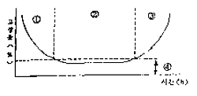
- ① 구역
- ② 구역
- ③ 구역
- ④ 구역
(정답률: 78%)
39. 보전 계획을 수립할 때 검토하여야 할 사항이 아닌 것은?
- 보전 비용
- 수리 시간
- 운전원 역량
- 생산 및 수리 계획
(정답률: 83%)
40. 공정별 배치(Process Layout)에 대한 설명으로 틀린 것은?
- 같은 종류의 기계들이 한 작업장에 같은 기능별로 배치되어 있다.
- 다품종 소량생산에 적합한 배치 방법이다.
- 생산효율을 높이기 위해서는 운반거리의 최소화가 주안점이다.
- 제품이 규칙적인 비율로 생산되어 원자재 재고, 재고품 등이 발생하지 않는다.
(정답률: 61%)
3과목: 공업계측 및 전기전자제어
41. 그림과 같은 블록선도가 의미하는 요소는?
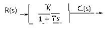
- 미분요소
- 1차 빠른요소
- 1차 지연요소
- 2차 지연요소
(정답률: 75%)
42. 조절계의 제어동작 중 단일 루프 제어계에 속하지 않는 것은?
- 비율제어
- 비례제어
- 적분제어
- 미분제어
(정답률: 67%)
43. 다음 중 각도 검출용 센서로 사용되는 센서가 아닌 것은?
- 싱크로(synchro)
- 레졸버(resolver)
- 리드(read)스위치
- 포텐쇼미터(potentiometer)
(정답률: 67%)
44. 전압계로 전압의 측정 범위를 확대하기 위하여 전압계 내부에 배율기의 저항은 전압계와 어떻게 연결해야 하는가?
- 전류계와 병렬로 연결한다.
- 전압계와 직렬로 연결한다.
- 전압계와 병렬로 연결한다.
- 전압계와 연결하지 않는다.
(정답률: 67%)
45. 순시값의 제곱에 대한 평균값의 제곱근으로 표현되는 값은?
- 파고값
- 최대값
- 실효값
- 평균값
(정답률: 71%)
46. 소용량 농형 유도전동기에 정격전압을 가하면 기동전류가 정격전류의 4~6배의 기동전류가 흐르지만 용량이 작기 때문에 정격전압을 가해서 기동하는 방식은?
- Y-△ 기동
- 전전압 기동
- 리액터 기동
- 2차 저항기동
(정답률: 68%)
47. 어떤 양을 수량적으로 표시하려면 그 양과 같은 종류의 기준이 필요한데 이 비교 기준은 무엇인가?
- 오차
- 측정
- 단위
- 보정
(정답률: 72%)
48. 피드백 제어에서 가장 핵심적인 역할을 수행하는 장치는?
- 신호를 전송하는 장치
- 안정도를 증진하는 장치
- 제어대상에 부가되는 장치
- 목표값과 제어량을 비교하는 분석
(정답률: 82%)
49. 트랜지스터의 일본식 명칭표기가( 2 S C 1815Y)로 되어 있다면, 이것은 어떤 형식인가?
- pnp 저주파 전력용
- npn 저주파 전력용
- pnp 고주파 소신호용
- npn 고주파 소신호용
(정답률: 49%)
50. 다음 그림은 구동부의 약도이다. 이에 해당하는 것은?
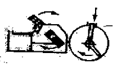
- 실린더식 스프링형
- 다이어프램식 스프링형
- 전동모터식 스프링리스형
- 전동유압 서보식 스프링형
(정답률: 59%)
51. 십진수 53을 2진수로 표시한 것은?
- 111101
- 110101
- 110111
- 111111
(정답률: 77%)
52. 대칭 3상 Y 결선에서 상전류(IP)와 선전류(I1)와의 관계는?
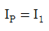
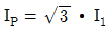
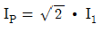
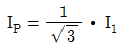
(정답률: 57%)
53. 1㎌콘덴서에 22000V로 충전하여 이를 200Ω의 저항에 연결하면 저항에서 소모되는 총 에너지는 약 몇 J 인가?
- 12.2
- 122
- 24.2
- 242
(정답률: 45%)
54. 사람의 귀에 들이지 않을 정도로 높은 주파수의 소리를 이용한 센서는?
- 온도 센서
- 초음파 센서
- 파이로 센서
- 스트레인게이지
(정답률: 84%)
55. 2진수 11001의 2의 보수는 다음 중 어느 것인가?
- 00110
- 00111
- 11000
- 11010
(정답률: 59%)
56. 다음 중 직류전동기의 속도제어 방법이 아닌 것은?
- 저항제어
- 극수제어
- 계자제어
- 전압제어
(정답률: 64%)
57. 전압을 안정하게 유지하기 위해서 사용되는 다이오드는?
- 정류 다이오드
- 제너 다이오드
- 터널 다이오드
- 쇼트기 다이오드
(정답률: 78%)
58. 다음과 같은 회로에서 부하전력을 정확히 표시한 것은? (단, R : 전압계 내부저항, r : 전류계 내부저항, E : 전압계 지시값, I : 전류계 지시값)
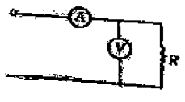
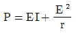
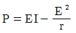
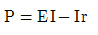
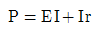
(정답률: 58%)
59. A와 B가 입력되고 X가 출력일 때 다음 그림과 같이 타임 차트(time chart)가 그려졌다면 어느 회로인가?
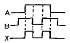
- AND회로
- OR회로
- Flip-Flop회로
- Exclusive-OR회로
(정답률: 76%)
60. 대전 현상에 의해서 물체가 가지는 전기량을 무엇이라 하는가?
- 전류
- 저항
- 전하
- 전압
(정답률: 73%)
4과목: 기계정비 일반
61. 축이음의 종류 중 2개의 축이 평행하고, 2축 사이가 비교적 가까운 경우의 회전동력을 전달시키고자 할 때 사용되는 축이음 방식은?
- 고정 커플링(Rigid coupling)
- 올덤 커플링(Oldham's coupling)
- 유니버셜 조인트(Universal joint)
- 플렉시블 커플링(Flexible coupling)
(정답률: 58%)
62. 펌프의 회전수를 변화시킬 때 양정은 어떻게 변화하는가?
- 회전수에 비례한다.
- 회전수의 제곱에 비례한다.
- 회전수의 세제곱에 비례한다.
- 회전수의 네제곱에 비례한다.
(정답률: 66%)
63. 유체의 역류를 방지하는 것으로 역류할 때에 밸브체가 자중과 유체 압력에 의해 자동적으로 닫히는 것은?
- 코크 체크 밸브
- 흡입형 체크 밸브
- 리프트 체크 밸브
- 스프링 부하형 체크 밸브
(정답률: 56%)
64. 키(key) 맞춤 시 기본적인 주의 사항으로 틀린 것은?
- 키 홈은 축심과 평행되지 않게 가공한다.
- 충분한 강도를 검토하여 규격품을 사용한다.
- 키는 측면에 힘이 작용하므로 폭, 치수의 마무리가 중요하다.
- 키의 각 모서리는 면 따내기를 하고 양단은 큰 면 따내기를 한다.
(정답률: 75%)
65. 열박음 작업 중 가열조립작업 시 주의사항이 아닌 것은?
- 천천히 정확하게 조립한다.
- 조립 후 냉각할 때는 급랭하지 않는다.
- 둘레에서 중심으로 서서히 균일하게 가열한다.
- 가열 도중 구멍 내경을 수시로 측정하여 팽창량을 점검한다.
(정답률: 55%)
66. 기어 감속기의 분류 중 교쇄 축형 감속기에 해당하는 것은?
- 윔 기어
- 스퍼 기어
- 헬리컬 기어
- 스파이럴 베벨 기어
(정답률: 56%)
67. V 벨트 전동장치에 사용되는 벨트에 관한 설명으로 옳지 않은 것은?
- A 등급이 가장 큰 허용장력을 받을 수 있다.
- 벨트의 단면 규격도 표준구격이 제정되어 있다.
- 허용장력은 크기에 따라 6종류로 규정하고 있다.
- 벨트의 길이는 조정할 수가 없어 생산 시에 여러 가지 길이의 규격으로 제공한다.
(정답률: 78%)
68. 배관용 파이프에 나사를 가공하기 위하여 사용하는 공구는?
- 오스터(oster)
- 파이프 벤더(pipe bender)
- 파이프 렌치(pipe wrench)
- 플레어링 툴 셋(flaring tool set)
(정답률: 77%)
69. 축 정렬(centering)에 관한 설명으로 옳지 않은 것은?
- 가능한 한 심(shim)의 개수를 최소화 한다.
- 라이너(liner)는 높은쪽의 축 기초볼트에 삽입한다.
- 심을 넣어 조정할 부위의 페인트나 녹은 반드시 제거한다.
- 측정 시 커플링(coupling)을 회전방향과 같은 방향으로 돌린다.
(정답률: 61%)
70. 냉각 인발로 제작된 이음매 없는 관으로 값이 비싸고 고온 강도가 약한 단점이 있으나, 내식성, 굴곡성이 우수하고 전기 및 열전도성이 좋아 열교환기용, 압력계용 배관, 급유관 등으로 널리 사용되는 관은?
- 강관
- 동관
- 가스관
- 주철관
(정답률: 68%)
71. 송풍기 기동 후 베어링 온도가 급상승하는 경우 점검사항이 아닌 것은?
- 윤활유의 적정 여부를 점검한다.
- 미끄럼 베어링은 오일링의 회전이 정상인가 점검한다.
- 베어링 내의 영하 기상 조건의 경우에는 냉각수를 점검한다.
- 베어링 케이스의 경우는 자유측의 커버가 베어링의 외륜을 누르고 있지 않은지 점검한다.
(정답률: 62%)
72. 기어전동 장치에서 두 축이 직각이며, 교차하지 않는 경우에 큰 감속비를 얻을 수 있으나 진동 효율이 매우 나쁜 기어는?
- 웜 기어(worm gear)
- 내접 기어(internal gear)
- 베벨 기어(bevel gear)
- 헬리컬 기어(helical gear)
(정답률: 68%)
73. 원주면에 흠이 있는 원판상 회전체를 케이싱 속에서 회전시켜 이것에 접촉하는 액체를 유체 마찰에 의한 압력에너지를 주어 송출하는 펌프는?
- 분류펌프
- 수격펌프
- 마찰펌프
- 횡축펌프
(정답률: 73%)
74. 간단한 형상의 경향 베인을 사용하고 토출 압력이 50 ~ 250[mmHg]인 원심형 통풍기는?
- 축류 팬
- 실로코 팬
- 터보 팬
- 플레이트 팬
(정답률: 59%)
75. 용적형 회전펌프로서 대유량의 기름을 수송하는데 적당하고 비교적 고장이 적고 보수가 용이한 것은?
- 수격 펌프
- 축류 펌프
- 베인 펌프
- 벌류트 펌프
(정답률: 55%)
76. 관로에 설치한 힌지로 된 밸브판을 가진 밸브로 밸브판을 회전시켜 개폐를 하며, 스톱밸브 또는 역지 밸브로 사용되는 밸브는?
- 플랩(flap) 밸브
- 게이트(gate) 밸브
- 앵글(angle) 밸브
- 리프트(lift) 밸브
(정답률: 59%)
77. 유체의 흐르는 방향을 직각으로 바꿀 때 사용하는 밸브는?
- 체크 밸브
- 앵글 밸브
- 슬루스 밸브
- 나비형 밸브
(정답률: 71%)
78. 축 고장의 원인 중 조립 및 정비 불량에 속하지 않는 것은?
- 급유 불량
- 흰 축 사용
- 치수 강도 부족
- 끼워 맞춤 불량
(정답률: 54%)
79. 전동기의 고장 현상과 원인의 연결이 옳지 않은 것은?
- 기동 불능 - 공진
- 과열 - 과부하 운전
- 진동 - 베어링 손상
- 절연불량 - 코일 절연물의 열화
(정답률: 73%)
80. 정적 실(seal)로 O-링을 사용할 경우 장점이 아닌 것은?
- 설치 공간이 작다
- 실(seal) 효과가 매우 크다.
- 저압이 작용되는 곳에 좋다.
- 접촉 면적이 작아 마찰이 적다.
(정답률: 53%)